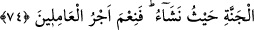
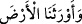
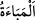
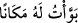

Benim cevherimin aydınlığı güneşin kaynağındandır
Karanlıklar beni altüst edemez
Yine o şöyle der:
Hasırın üzerinde iki âlemi geziyoruz
Kamışın üzerine binip şimşek gibi hareket ediyoruz
74. Onlar: Bize verdiği sözde sâdık olan ve bizi, dilediğimiz yerinde oturacağımız
bu cennet yurduna vâris kılan Allah’a hamdolsun. İyi amelde bulunanların mükâfatı
ne güzelmiş! derler.
“Onlar” mü’minler cenneti görünce: “Bize verdiği sözde sâdık olan ve bizi,
dilediğimiz yerinde oturacağımız bu cennet yurduna vâris kılan Allah’a hamdolsun.”
Ca’fer-i Sâdık (r.a.) der ki: “Bu hamd, Allah ile beraber kesin yerleşme yurduna
(dâru’l-karâr) yerleşen âriflerin hamdidir. “Üzüntüleri bizden gideren Allah’a hamd
olsun.” (Fâtır, 35/34) kavli de vâsılların/erenlerin hamdidir.
Sehl (r.a.) da şöyle der: “Cennetliklerden kimi, Allah’a verdiği sözde sâdık olduğu
için hamdeder, kimisi de bildiği ve bilemediği Allah’ın nimetlerinden dolayı bütün
hallerde hamdi gerektirdiği için hamdeder. Bu seçkinlerin hamdi olmak hasebiyle daha
etkilidir.”
Cennetlikler “
/ yurdunda… vâris kılan” derken, istiâre yoluyla
yerleştikleri mekân olan cennet yurdunu kasdediyorlar. Çünkü bu yere onları vâris
kılmak, amelleri yerine geçmek üzere vermek ve sâhip kılmak ya da cennette bulunan
herşey üzerinde tıpkı bir vâris gibi istediğini tasarrufta bulunmak demektir.
et-Te’vîlâtü’n-Necmiyye’de der ki: “Allah Teâlâ: “Bizi dilediğimiz yerinde
oturacağımız bu cennet yurduna vâris kılan…” kavli ile avam için verdiği sözde sâdık
oldu. “İhsân üzere hareket edenler için, daha güzeli ve fazlası var.” (Yûnus, 10/26)
havâs için verdiği sözde sâdık oldu. “Şüphesiz muttakîler birtakım cennetlerde ve
nehirlerde, Muktedir bir Melîk’in dost meclisinde (olacaklar)dır.” (el-Kamer,
54/55) kavliyle ahassu’l-havâs için verdiği sözde sâdık oldu. Aşk ile “amel edenlerin
mükâfatı ne güzeldir!” (Âl-i İmrân, 3/136).
Tâcü’l-masâdır’da der ki: “
” yer tutmak/edinmek demektir. Mahalle anlamındaki
“
”den alınmıştır.” “
” kendisi için falanca yeri düzeltip hazırladım,